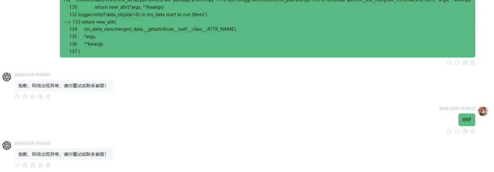
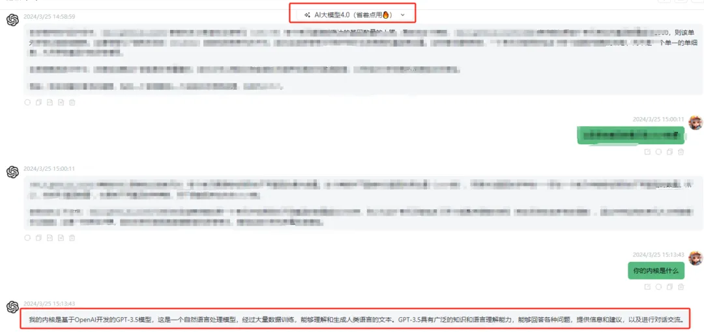

网络封锁的是什么
原文：https://mp.weixin.qq.com/s?__biz=MzAwMzIzOTk5OQ==&mid=2247509442&idx=1&sn=8173440de3f304e34ae04898e19ca9fb&chksm=9b3cdc92ac4b5584084135259a64daaf32e2b429d09305f72b840548e6b9f15a502c8610d4f1#rd 合集：漫谈胡侃
最近买了个某川AI，想用用GPT4，谁知道总是网络错误，甚至还会降级至3.5版本。吐槽之余也不禁感叹，我们这些生信以及IT的人真是太不容易了，学习时还得挖空心思翻越屏障获取信息，偷鸡摸狗、小心翼翼的"科学上网"。SRA和GEO的访问已经很困难了，更不要说还有很多测序数据、API挂载在Zenodo、Google这样的平台上，基本就是每天和403、404见面。也许，我们有自己的"质子"在锁科技。



如何联系我们

 公众号后台消息回复不便，这里给大家留一下领取资料及免费服务器(足够支持你完成硕博生涯的生信环境)的微信号 ，方便各位随时交流、提建议（科研任务繁重，回复不及时请见谅）。此外呼声一直很高的交流群 也建好了，欢迎大家入群讨论：
公众号后台消息回复不便，这里给大家留一下领取资料及免费服务器(足够支持你完成硕博生涯的生信环境)的微信号 ，方便各位随时交流、提建议（科研任务繁重，回复不及时请见谅）。此外呼声一直很高的交流群 也建好了，欢迎大家入群讨论：
大家可以阅读完这几篇之后添加给生信入门初学者的小贴士 如何搜索公众号过往发布内容

 您点的每个赞和在看，我都认真当成了喜欢
您点的每个赞和在看，我都认真当成了喜欢